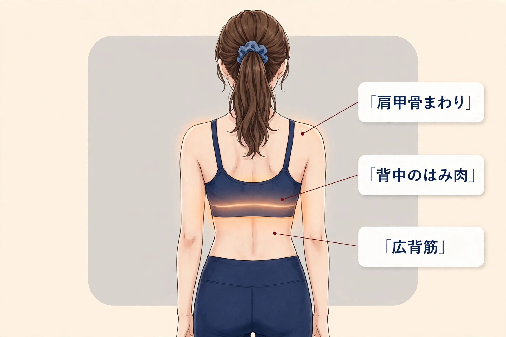

背中のはみ肉
美容整体ステラ・ポラリス東三国｜大阪市淀川区東三国・東三国駅徒歩5分・女性向け

ブラの上にのる背中のはみ肉を、すっきりした背中のラインへ
ブラジャーの上にのる背中のお肉や、脇から背中にかけての段差が気になる——背中のはみ肉は、自分では見えにくい分、写真や試着で気づいて気になる方が多いお悩みです。姿勢の崩れで背中が丸くなると、お肉が寄って見えやすくなり、肩甲骨まわりの筋肉の硬さや巡りの滞りも重なると言われています。背中は年齢の印象が出やすい場所でもあります。このページでは、背中のはみ肉の背景にある仕組みと、背中のラインがすっきり見える状態を目指す当サロンでのケア、ご自宅でできるセルフケアをご案内します。背中は、姿勢の印象を大きく左右する場所です。お肉そのものの量だけでなく、姿勢と筋肉の状態で見え方が変わるため、整える余地が大きいお悩みでもあります。
ご予約はこちら（Coubic）こんなお悩みありませんか
- ブラジャーの上に、背中のお肉がのっているのが気になる
- 薄着や体のラインが出る服だと、背中の段差が目立つ気がする
- 背中を触ると、肩甲骨まわりが固く盛り上がっている
- 猫背気味で、背中が丸く見えると言われることがある
- 腕を上げると、脇から背中にかけてつっぱる感じがある
- 背中がむくんだように重く、ブラが食い込む感じがする
- 後ろ姿に年齢を感じるようになってきた
当てはまる項目が多いほど、姿勢の崩れと肩甲骨まわりの硬さが重なっている目安とされています。背中のはみ肉は、お肉そのものだけでなく、姿勢による見え方と巡りの影響も大きいお悩みです。次のセルフチェックで、肩甲骨の動きと背中のラインの傾向を確かめてみましょう。
簡単セルフチェック（肩甲骨の動きチェック）
鏡の前で、肩甲骨の動きと背中のラインを確かめる簡単な方法です。
- 鏡で後ろ姿を確認できる場合は、ブラのラインの上に段差ができていないか、左右差がないかを見ます。
- 両腕をゆっくり真上に上げてみます。耳の横まで上がりにくい場合は、肩甲骨まわりが固まっている目安と言われています。
- 背中の後ろで両手の指を組むように近づけてみます。届きにくい側がある場合は、肩甲骨まわりの柔らかさに偏りがある目安です。
※これは診断ではありません。ご自身の状態の傾向を知る目安としてお使いください。
背中のはみ肉の原因と仕組み
姿勢と背中の見え方の関係
背中のお肉の見え方は、姿勢によって大きく変わります。猫背で背中が丸くなると、肩甲骨が外へ開いて背中の皮膚やお肉が寄り集まり、ブラの上に段差ができやすくなります。反対に、背筋が伸びて肩甲骨が寄った姿勢では、同じお肉の量でも背中のラインがすっきり見えます。図1のように、姿勢ひとつで後ろ姿の印象は変わってきます。試着室で後ろ姿を見て驚いた、という声が多いのもこのお悩みの特徴です。見えにくい場所だからこそ、姿勢から整える視点が大切になります。

図1 背中が丸い姿勢と、背筋が伸びた姿勢での、背中のラインの見え方の違いのイメージ。姿勢や筋肉の状態によって、見え方には個人差があります。
肩甲骨まわりの筋肉の硬さと衰え
肩甲骨まわりには、姿勢を保つ小さな筋肉と、腕を引く大きな筋肉が集まっています。デスクワークで動かす機会が減ると、固まる部分と働きにくくなる部分に偏りが出て、背中のラインが崩れやすいと言われています。肩甲骨がしっかり動くことは、背中をすっきり見せる土台になります。肩甲骨は本来、肋骨の上を滑るように動く骨です。まわりの筋肉が固まると動きが小さくなり、腕の上げにくさや背中の重さにもつながります。動かす機会を取り戻すことが、ほぐす第一歩になります。
広背筋と脇から背中のライン
背中の大きな筋肉である広背筋は、脇の下から腰へ広がり、後ろ姿の輪郭をつくっています。この筋肉が硬くなったり働きにくくなったりすると、脇から背中にかけてのラインがぼやけ、お肉がはみ出して見えやすくなります。背中全体の筋肉の状態が、ラインの見え方に影響します。広背筋は、姿勢を保つときにも働く大きな筋肉です。ここがゆるんで働きやすくなると、背中から腰にかけてのラインが整いやすくなります。背中のラインは、肩甲骨の動きと広背筋の状態の両方から整えていくことが大切です。
巡りの滞りと下着の食い込み感
背中まわりの巡りが滞ると、むくみで背中が重く感じたり、下着が食い込む感覚が強くなったりすることがあります。夕方に背中の段差が目立つと感じる方は、姿勢に加えて巡りの影響も重なっている可能性があります。温めてゆるめるケアが、軽い背中への助けになります。夕方と朝で段差の目立ち方が違う方は、巡りの影響が重なっている目安です。温めるケアを取り入れると、背中の軽さを感じやすくなります。朝の着替えのときに背中の軽さを確かめる習慣も、変化に気づく目安になります。
セルフケアで足りる場合・サロンケアが向く場合
背中の段差が軽く、姿勢を正すとラインが整って見えることが多い場合は、まずご自宅でのセルフケアと姿勢の見直しを続けて様子を見る方法があります。一方で、肩甲骨まわりが固く自分ではほぐしにくい、猫背のクセそのものを整えたい、背中から脇まで広くケアしたいという場合は、サロンでのケアが向いている目安になります。サロンでは、姿勢の土台を整えながら背中全体をゆるめ、施術後に「背中が軽い」「後ろ姿のラインが整った」と感じやすい状態を目指します。今の状態に合わせて選ぶことが大切です。後ろ姿の変化は一緒に確認しながら進めますので、気になるラインはカウンセリングでお聞かせください。
当サロンでのケア
当サロンの背中のはみ肉ケアは、「背中のラインがすっきり見える、伸びやかな後ろ姿」を目指す組み立てです。まず姿勢と肩甲骨の動きを一緒に確認し、部位と目的に合わせて3つの手技を組み合わせます。背中はご自身で見えにくい場所のため、状態を確認しながら進めます。
美容整体：背骨のラインと肩甲骨の位置を整え、背中が丸まりにくい姿勢の土台をつくることを目的に。まっすぐ立つ感覚と、胸の開きやすさを取り戻すお手伝いをします。
アロマオイルマッサージ：肩甲骨まわりから広背筋、脇の下までをオイルでゆるめ、巡りが流れやすい状態を目指します。背中全体が軽く感じる、リラックス感の高いケアです。
もみほぐし：固く盛り上がりやすい肩甲骨の内側や、張りの強い背中のポイントを丁寧にほぐし、肩甲骨が動きやすい状態を目指して進めます。
ケアを通して目指すのは、こんな変化です。
- 背中のラインが整い、ブラの上の段差が目立ちにくい見え方へ
- 肩甲骨が動きやすくなり、背中が軽く感じる状態へ
- 背筋が伸びて、後ろ姿の印象が若々しく見える姿勢へ
- 脇から背中にかけてのラインがすっきりする感覚へ
- 猫背のクセに気づき、日常でも姿勢を正しやすい土台へ
施術の仕上げには、肩甲骨を寄せる簡単な体操や、デスクワークの合間にできる姿勢のリセット方法もお伝えします。後ろ姿は自分では見えにくい分、変化を感じにくい場所です。施術前後で一緒に確認しながら進めますので、気になる点は遠慮なくお声がけください。

施術の流れ
ご来店後、気になる部位やお悩み、ご希望の強さなどをうかがいます。完全個室のため、周りを気にせずお話しいただけます。
姿勢の傾向や肩甲骨の動き、背中の張り具合などを一緒に確認し、その日の状態に合わせた施術の進め方をご案内します。気になるラインがあれば、その場でお聞かせください。
美容整体を中心に、ご希望に応じてアロマオイルマッサージ、もみほぐしを組み合わせて進めます。強さは途中でも調整できます。
施術後の状態を確認し、ご自宅で続けやすいセルフケアのポイントをお伝えします。次回の目安についても、ご希望があればご案内します。
料金
| コース | 通常価格 | キャンペーン価格（12/25まで） |
|---|---|---|
| 80分 | 8,000円 | 3,000円 |
| 100分 | 10,000円 | 4,000円 |
| 120分 | 12,000円 | 5,000円 |
クリスマスキャンペーンは12月25日まで、ご新規様もリピーターの方も対象です。施術内容は当日の状態とご希望に合わせて組み立てます。
ご自宅でできるセルフケア
- 肩甲骨寄せ体操：両肘を後ろへ引き、肩甲骨を寄せて5秒キープします。10回を1セットとして、仕事の合間に取り入れるのが目安です。
- タオル背中ストレッチ：タオルの両端を持って頭の上に上げ、ゆっくり左右に傾けます。脇から背中を伸ばすつもりで、左右20秒ずつ行ってください。
- 胸を開く壁ストレッチ：壁に手をつき、体をひねるようにして胸の前を開きます。猫背で縮んだ前側を伸ばし、背中とのバランスを整えます。
- 背中を温める：湯船に背中まで浸かる、蒸しタオルを肩甲骨の間に当てるなど、温めて巡りを助ける習慣も背中の重さ対策になります。
ご自宅でのケアに：セルフケア資料ライブラリ（無料）
このお悩みに合わせたセルフケアの考え方を、無料の資料ライブラリでご紹介しています。
セルフケア資料ライブラリを開く →
受診の目安
背中に強い痛みがある場合や、しびれを伴う場合、触って分かるしこりがある場合、短期間で体重が大きく変化した場合は、施術の前に医療機関への受診をおすすめします。背中の痛みが日ごとに強くなる場合も、まずは医療機関でご相談ください。
よくある質問
Q. 初めてでも大丈夫ですか？
はい。当サロンは完全予約制・完全個室で、1日3組までのご案内です。最初にカウンセリングで姿勢の傾向や気になるラインをうかがい、無理のない内容から始めます。施術の前後で姿勢の変化を一緒に確認しながら進めますので、初めての方も安心してご利用いただけます。
Q. 1回で背中のラインは変わりますか？
施術後は、姿勢が整って背中が軽く感じたり、ラインがすっきり見えたりする感覚を持つ方がいらっしゃいます。ただし、姿勢のクセは日常の積み重ねで戻りやすいため、ご自宅での体操と合わせて続けることが、ラインを保つ土台になります。感じ方には個人差がありますので、施術の際に一緒に確認しましょう。
Q. コースはどう選べばいいですか？
80分・100分・120分のコースがあり、ケアしたい部位の広さやお時間のご都合に合わせて選べます。背中から脇、肩まわりまでゆっくり整えたい方には、100分が選ばれることが多いコースです。迷われる場合は、ご予約の際にご相談ください。お気軽にご相談ください。
Q. 場所と予約方法を教えてください。
大阪市淀川区東三国、東三国駅から徒歩5分です。完全予約制のため、予約サイト（Coubic）またはLINE公式アカウントからご予約をお願いしています。
Q. 男性も受けられますか？
当サロンは女性向けのため、男性の方は、同じ東三国の男性専用整体院「北辰堂」をご案内しています。
施術者について
平賀建人（施術歴30年）
鍼灸師・登録販売者・アロマセラピスト・パーソナルトレーナーの資格を持ち、美容整体を中心に、アロマオイルマッサージ、もみほぐしを、その日の状態とご希望に合わせて組み合わせて施術します。このページの内容は、施術者の知識と経験をもとに作成しています。

料金・ご予約
ご新規様もリピーターの方も 12/25まで
80分 3,000円／100分 4,000円／120分 5,000円
通常価格は80分8,000円／100分10,000円／120分12,000円です。施術内容はご希望に合わせて組み立てます。
営業時間：月〜土 17:00〜23:00／日 10:00〜23:00（完全予約制）｜電話：080-2468-3086
大阪府大阪市淀川区東三国2丁目25番4号101（東三国駅徒歩5分）
専門解説で詳しく見る
仕組みから詳しく知りたい方は、専門解説シリーズのこちらの記事もあわせてご覧ください。